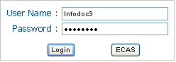

Here, you will discover what an Interest Group is and how to participate in its life.
You can navigate to any part of this page through the links below:
What is an Interest Group?
The Interest Group has been defined in Can you speak CIRCABC-IPM?
(see "Welcome to CIRCABC-IPM").
 Navigate and join an interest group
Navigate and join an interest group
Why to become a Member of an interest group?
What makes membership attractive is the possibility to perform a wide range of actions over the
contents, to be able to exchange views with the other members, so, to be able to collaborate
closely with people who are sharing your concerns and projects.
Membership is free-of-charge.
A unique user name and password allows you to become a member of several Interest Groups
Your rights to access contents depend on the access profile the IG leader has assigned to you.
Access to an Interest Group in five steps
From the step "login" to the main page of your Interest Group, you pass through the steps below:
Login CIRCABC > Browse categories > Browse category names > Select a category > Select an Interest Group
Feel free to follow the road to your interest group:
-
You log in CIRCABC through

-
You are taken to the CIRCABC main page. You click Browse categories from the left-top
main menu (where "Logout" has replaced "Login") :
-
You choose the CIRCABC category header under which your category is listed:
-
The categories are listed under their respective headers. You select the category you wish:
-
You are taken to the list of the interest groups gathered in your category.
You click the name of the interest group you are interested in:
The next chapter clarifies the meaning of the expression "Public access" .
Apply for membership
Once you have passed through the authentication step and browsed the categories, you can reach
a list of the IGs which are available to you. These are classified under three headings mirroring
the CIRCABC-IPM main access types:
-
Members: shows the interest groups for which you have Membership.
This class is displayed if you have at least one membership.
-
Registered access: lists the interest groups of which you may become a Member.
This appears if you have made a login. Please note that the IGs classified under "registered access"
are not visible to those who do not access through "Login".
-
Public access: lists the interest groups which are accessible to everybody irrespective of
authentication. This is displayed even if you do not make a login.
The Interest Groups that are partly for public and partly for authorized access are listed as "registered access".
Once logged in, you choose an Interest group among those listed under "registered access".
The link "Join this group" is available from two places:
-
Besides its name, in the list of the interest groups with "registered access"
-
From the Welcome page of the interest group along with "contact" information
 How to apply for membership of interest group "Astrophysics"
How to apply for membership of interest group "Astrophysics"
The "Apply for membership" page is split in two areas:
-
The first one informs you about how to contact the IG leader
-
The second area allows you to apply and, if you wish so, to put forth the reasons for your application.
Having filled out the application form, you press the "submit" button. The application reacts by
displaying the following message:
"Your application to the Interest Group has been taken into account. A mail is forwarded to the Interest Group Leader(s)".
Now it is for the interest group leader to accept or refuse to invite you. You are notified by e-mail of your new membership.
Your application has been accepted so you have got membership. Now you are ready to participate in the life of your Interest Group.